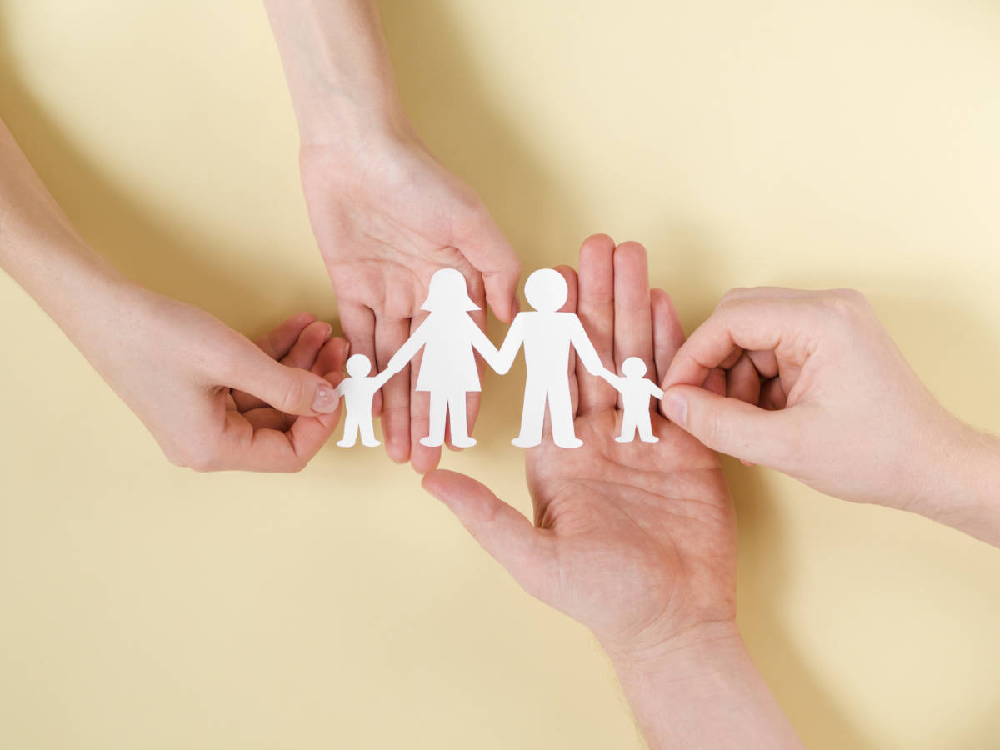

Adoção no Brasil
A adoção no Brasil está regulamentada pelo Estatuto da Criança e do Adolecente, no qual é vista como uma medida protetiva da criança abandonada.
"Os abrigos infantis estão cheios de contos trágicos, pois recebem muitas crianças e adolescentes que foram vítimas dos mais variados casos de violência e abandono. Em 2015, o Conselho Nacional de Justiça (CNJ) contabilizou que mais de 5,6 mil crianças e adolescentes estão à espera de uma nova família nos lares adotivos em todo o país. Para resolver essa questão, os juízes das Varas da Infância e da Juven tude contam com o Cadastro Nacional de Adoção (CNA).
"Segundo os dados do CNA, existem mais de 33 mil famílias"cadastradas na fila de adoção. Mas se o numero de pessoas que desejam adotar é quase seis vezes superior ao número de crianças e adoçecentes esperando por uma nova família (5,6 mil), por que o número de crianças nos abrigos de acolhimento não para de crescer?
Entraves da adoção:as exigências das famílias
A resposta em questão está nas exigências que as famílias possuem acerca das características da criança que desejamadotar.A grande maioria dos pais que aguardam nas filas do CNA exige que a criança seja recém-nascida, saudável e de pele clara.Todavia, ainda segundo o CNA apenas 6% das crianças aptas a serem adotadas têm menos de um ano de idade.Enquanto isso, 87,42% são crianças com 5 anos ou mais de idade, faixa etária aceita po apenas 11% dos pais que procuram a doção. O resultado é de que algumas famílias esperam por anos até que suas exigências sejam atendidas.
O fato é que a doção, desde a Constituição de 1988, passou a ser considerada uma medida protetiva aos interesses e ao bem-estar da criança.Isso quer dizer que ela está além dos desejos ou das exigências dos adultos que se dispõem a adotar. Trata-se de um processo em que se provalece a preservação de direitos como a educação, proteção contra maus-tratos e abusos, entre outros. Os pontos principais considerados pelos juízes que tratam dos casos de adoção são a garantia de oportunidade de pleno desenvolvimento físico, psicológico e social